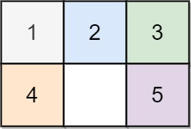
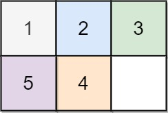

773. 滑动谜题
| 题目信息 | 内容 |
|---|---|
| 难度 | 困难 |
| 核心模式 | BFS 在状态图上求最短步数 |
| 时间复杂度 | O(6! × 6) |
| 空间复杂度 | O(6! × 6) |
题目与约束
在一个 2 x 3 的板上（board）有 5 块砖瓦，用数字 1~5 来表示, 以及一块空缺用 0 来表示。一次 移动 定义为选择 0 与一个相邻的数字（上下左右）进行交换.
最终当板 board 的结果是 [[1,2,3],[4,5,0]] 谜板被解开。
给出一个谜板的初始状态 board ，返回最少可以通过多少次移动解开谜板，如果不能解开谜板，则返回 -1 。
示例 1：

输入：board = [[1,2,3],[4,0,5]]
输出：1
解释：交换 0 和 5 ，1 步完成
示例 2:

输入：board = [[1,2,3],[5,4,0]]
输出：-1
解释：没有办法完成谜板
示例 3:

输入：board = [[4,1,2],[5,0,3]]
输出：5
解释：
最少完成谜板的最少移动次数是 5 ，
一种移动路径:
尚未移动: [[4,1,2],[5,0,3]]
移动 1 次: [[4,1,2],[0,5,3]]
移动 2 次: [[0,1,2],[4,5,3]]
移动 3 次: [[1,0,2],[4,5,3]]
移动 4 次: [[1,2,0],[4,5,3]]
移动 5 次: [[1,2,3],[4,5,0]]
提示：
-
board.length == 2 -
board[i].length == 3 -
0 <= board[i][j] <= 5 -
board[i][j]中每个值都 不同
核心不变量
把所有棋盘状态看成一个图，相邻状态相差一次移动；BFS 第一次到达目标状态时所经过的层数，就是最少移动次数。
完整推导
思路推导
-
把状态当成节点：一块 2×3 的板只有 6 个格子，把数字按行优先读成一个长度 6 的字符串（如
"123450"）就能唯一表示一个状态。目标状态固定为"123450"。 -
把移动当成边：
0只能和相邻格子交换。把 6 个下标在板上的邻居关系预先写死： - 0 的邻居：1、3 - 1 的邻居：0、2、4 - 2 的邻居：1、5 - 3 的邻居：0、4 - 4 的邻居：1、3、5 - 5 的邻居：2、4 -
BFS 求最短路：从初始状态入队，每一层代表同样步数的所有状态。对队头状态的
0位置，尝试与每个邻居交换生成新状态；若等于目标就立即返回当前层数 +1；否则用集合去重后入队。队列清空仍未到达目标则返回-1。 -
为什么不会爆：6 个数字的全排列只有
6! = 720种状态（真正可达的更少），状态空间很小，BFS 完全够用。
Java 实现（BFS 状态搜索）
import java.util.*;
class Solution {
public int slidingPuzzle(int[][] board) {
// 1. 把二维板编码成字符串，如 "123450"
StringBuilder sb = new StringBuilder();
for (int[] row : board) {
for (int v : row) sb.append(v);
}
String start = sb.toString();
String target = "123450";
if (start.equals(target)) return 0;
// 2. 预存每个格子（下标）的相邻格子
int[][] neighbors = {
{1, 3}, {0, 2, 4}, {1, 5},
{0, 4}, {1, 3, 5}, {2, 4}
};
Queue<String> queue = new ArrayDeque<>();
Set<String> visited = new HashSet<>();
queue.offer(start);
visited.add(start);
int steps = 0;
// 3. 逐层 BFS
while (!queue.isEmpty()) {
int size = queue.size();
for (int i = 0; i < size; i++) {
String cur = queue.poll();
int zero = cur.indexOf('0');
for (int nb : neighbors[zero]) {
char[] arr = cur.toCharArray();
// 交换 0 与相邻格子
char tmp = arr[zero];
arr[zero] = arr[nb];
arr[nb] = tmp;
String next = new String(arr);
if (next.equals(target)) return steps + 1;
if (visited.add(next)) {
queue.offer(next);
}
}
}
steps++;
}
return -1;
}
}
复杂度
- 时间：
O(6! × 6)。状态总数最多 720，每个状态需 O(6) 构造字符串并尝试常数个邻居，均为常数级，实际远小于此上限。 - 空间：
O(6! × 6)。visited 集合最多存 720 个长度 6 的字符串，队列同理。
易错点与扩展（面试高频考点）
- 编码不一致：二维板与字符串之间的行列映射必须固定（行优先），否则
0的邻居下标会错位。 - 忘记去重：不去重会导致同一状态被反复入队，BFS 退化甚至死循环；必须用
visited集合。 - 把步数算错：判断"生成后是否等于目标"应在交换后立即判断并返回
steps + 1，而不是等出队时再算。 - 忽略已解情况：初始就是目标时应返回 0，否则会多算一步。
- 扩展——双向 BFS / A*：从起点和终点同时搜索可显著减少扩展量；也可用曼哈顿距离做 A* 启发式，本题状态小，普通 BFS 已足够。
力扣原题
C++ 实现
#include <string>
#include <vector>
#include <queue>
#include <unordered_set>
using namespace std;
class Solution {
public:
int slidingPuzzle(vector<vector<int>>& board) {
string start;
for (auto& row : board)
for (int v : row) start += to_string(v);
string target = "123450";
if (start == target) return 0;
// 每个下标的相邻格子，-1 表示结束
int neighbors[6][4] = {
{1, 3, -1, -1}, {0, 2, 4, -1}, {1, 5, -1, -1},
{0, 4, -1, -1}, {1, 3, 5, -1}, {2, 4, -1, -1}
};
queue<string> q;
unordered_set<string> visited{start};
q.push(start);
int steps = 0;
while (!q.empty()) {
int size = q.size();
while (size--) {
string cur = q.front(); q.pop();
int zero = cur.find('0');
for (int k = 0; k < 4 && neighbors[zero][k] != -1; k++) {
int nb = neighbors[zero][k];
string next = cur;
swap(next[zero], next[nb]);
if (next == target) return steps + 1;
if (visited.insert(next).second) q.push(next);
}
}
steps++;
}
return -1;
}
};
Python 实现
from collections import deque
class Solution:
def slidingPuzzle(self, board: list[list[int]]) -> int:
start = "".join(str(x) for row in board for x in row)
target = "123450"
if start == target:
return 0
# 每个下标的相邻格子
neighbors = [
[1, 3], [0, 2, 4], [1, 5],
[0, 4], [1, 3, 5], [2, 4]
]
visited = {start}
q = deque([(start, 0)])
while q:
cur, steps = q.popleft()
zero = cur.index('0')
for nb in neighbors[zero]:
lst = list(cur)
lst[zero], lst[nb] = lst[nb], lst[zero]
nxt = "".join(lst)
if nxt == target:
return steps + 1
if nxt not in visited:
visited.add(nxt)
q.append((nxt, steps + 1))
return -1